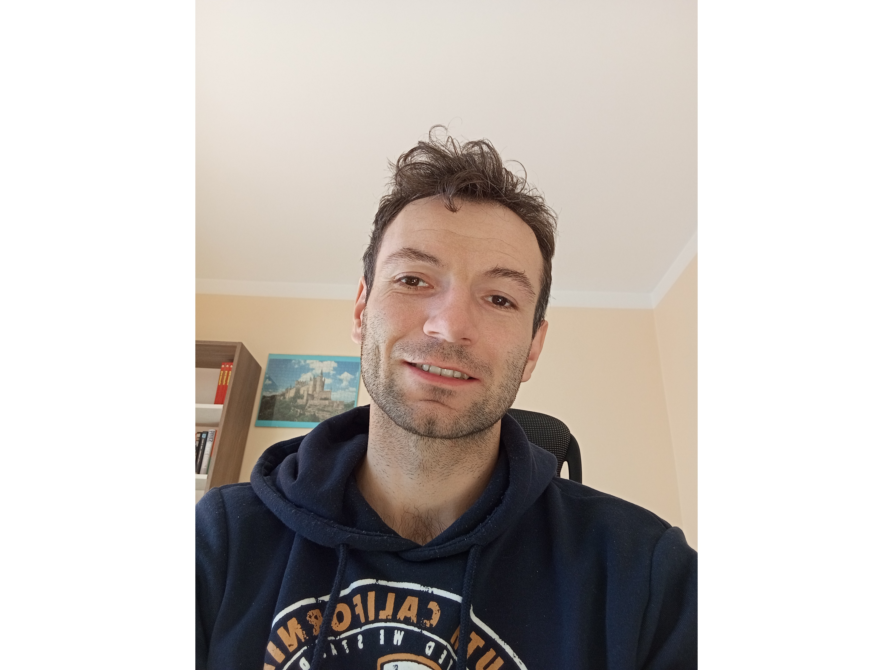

Kris Głodo

Summary
- Professional English to Polish translator.
- Web developer and programmer in training.
- Passionate Riichi Mahjong player.
- Amateur athlete.
Education
- 2011-2016 Jan Kochanowski University in Kielce, Master's Degree. Specializing in translation.
- 2007-2011 Technical School in Staszów.
Work Experience
Since graduating from University I am working as a freelance translator. My main areas of work are technical translations and video games localisations.
Skills and strong traits
- Self motivated and goal oriented.
- Always eager to learn new things.
- Familiar with translation CAT Tools.
Certificates
More about me
Get in touch with me